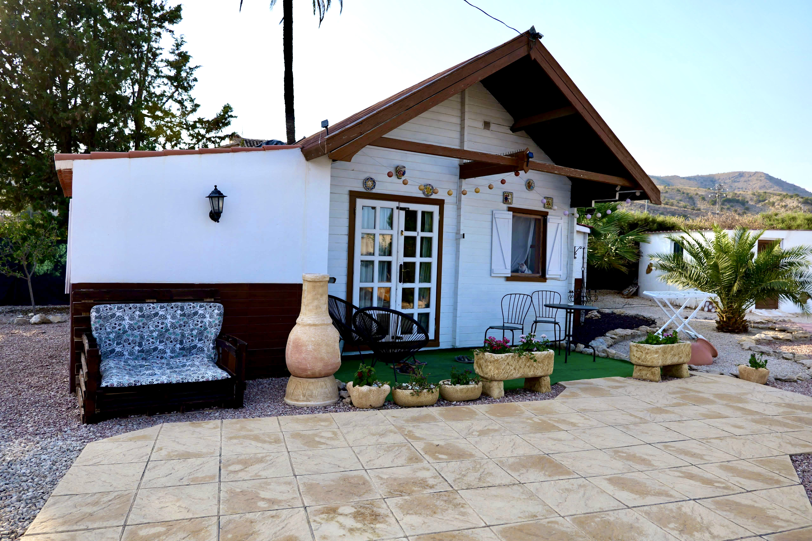

Natural
Un entorno sereno y rodeado de paisaje.
Alojamiento en Fortuna
Disfruta de un alojamiento acogedor, rodeado de naturaleza, con todo lo necesario para vivir una escapada tranquila y confortable.
La casita

Una casa pequeña, cálida y bien pensada para descansar. Todo está pensado para ofrecer una experiencia relajante y práctica.
Experiencia
Un entorno sereno y rodeado de paisaje.
Jacuzzi y espacios pensados para desconectar.
Ideal para escapadas breves o estancias tranquilas.
Galería
Fortuna
Fortuna combina tranquilidad, ambiente local y facilidad para explorar rincones de Murcia.
Réservation
Un cadre paisible, une maison douce, et un accueil personnalisé pour des vacances simples et mémorables.
Jacuzzi privé, accès piscine et ambiance paisible selon disponibilité.
Contacto